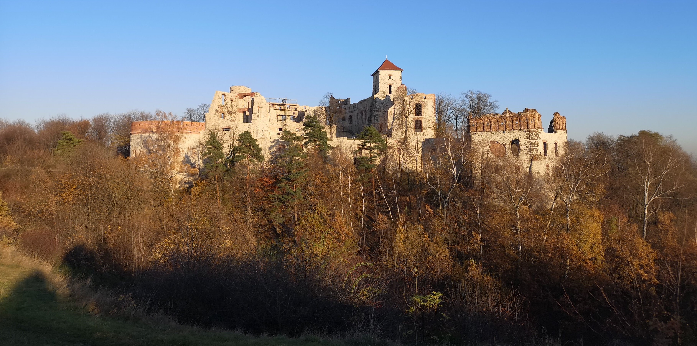

1 / 13

"Być wędrownikiem to niemała sztuka, a dostępna tylko dla tych, którzy posiadają prawdziwie harcerską postawę"
2 / 13
"Wędrownikowi nie wystarcza znajomość miejsca zamieszkania, wędrownika ciekawi świat"
3 / 13
"Wędrownik, patrząc w swą przyszłość, pragnie odnaleźć własną ścieżkę"
4 / 13
"Wędrowanie to znacznie więcej niż przemierzanie kilometrów czy wytrwałość fizyczna [...]"
5 / 13
"[Wędrowanie] to sztuka wchłaniania życia, które nas otacza, to oczy i uszy otwarte, to tajemnica współodczuwania przyrody i człowieka"
6 / 13
"Wędrówką nie będzie przyspieszony tupot nóg, nadmiar krzykliwego humoru, lecz właśnie cisza wśród ciszy lasu, skupienie wobec wschodów czy zachodów słońca.
To wyczucie wędrownik łatwo odszuka w sobie"
7 / 13
"WĘDROWNIK – jest zawsze gotów nieść pomoc"
8 / 13
"WĘDROWNIK – bardziej niż jakikolwiek inny harcerz jest przyjacielem całego świata"
9 / 13
"Wędrownika ciągnie siła nieprzeparta w dal na coraz to nowe, nieznane szlaki, nie pozwala zastygnąć mu w wygodnym, osiadłym życiu, toczącym się zbyt wolno"
10 / 13
"WĘDROWNIK – spostrzega urok życia wszędzie, gdziekolwiek się znajdzie, gdyż odkrywa to,czego inni w pozornej monotonii codziennych dni dopatrzyć się nie umieją"
11 / 13
"Wędrownik zna radość trudnych zwycięstw, urok przyrody, piękno zdobywania samotnie nie wydeptanych ścieżek"
12 / 13
"WĘDROWNIK – stale uprawia wędrówki, wędruje w zimie, w lecie, na wsi, w mieście, tropi miejsca, gdzie może być pożyteczny"Drogę jego wędrówki wyznaczają wartości zawarte w Prawie i Przyrzeczeniu Harcerskim"
13 / 13
"Drogę jego wędrówki wyznaczają wartości zawarte w Prawie i Przyrzeczeniu Harcerskim"